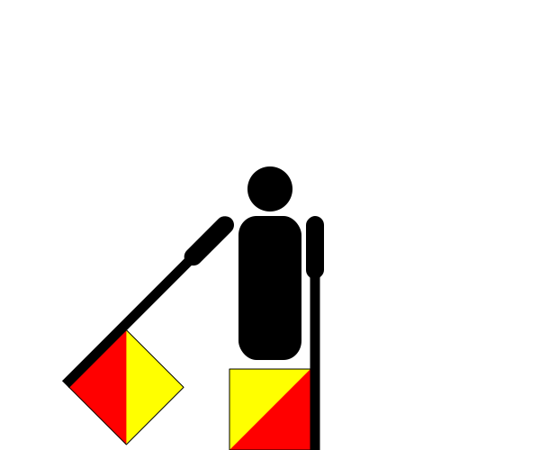

Clocks
Solution
(12:08) (numbers) |
18:43 2 |
Each time, when shown on an analog clock, creates a letter or number in Semaphore. The time in parentheses determines whether to use numbers or letters for that row. The flavour text indicates that the given time may not look like the exact semaphore position, but it’s close. | |||||
(12:15) (letters) |
8:20 N |
12:29 D |
8:15 M |
23:35 I |
16:36 N |
10:11 U |
9:22 S |
| (12:08) (numbers) |
19:30  1 |
This spells the clue phrase 2ND MINUS 1ST, suggesting to subtract the 1st part of each time (the hours) from the 2nd (the minutes). The values at the bottom represent an additional operation to perform on the corresponding values. Decoding the result using A1Z26 yields the answer. | |||||
| (12:15) (letters) |
17:44 S |
12:49 T |
|||||
| Min | Hr | Extra | Result | Letter |
|---|---|---|---|---|
| 43 | −18 | −5 | 20 | T |
| 20 | −8 | −3 | 9 | I |
| 29 | −12 | −4 | 13 | M |
| 15 | −8 | −2 | 5 | E |
| 35 | −23 | −1 | 11 | K |
| 36 | −16 | −15 | 5 | E |
| 11 | −10 | +4 | 5 | E |
| 22 | −9 | +3 | 16 | P |
| 30 | −19 | −6 | 5 | E |
| 44 | −17 | −9 | 18 | R |
| 49 | −12 | −18 | 19 | S |
TIME KEEPERS